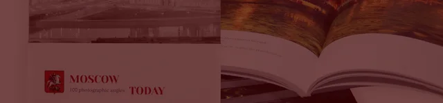

Мягкий переплёт с КБС
Печать книг в мягком переплете с КБС — это любые издания с клеевым бесшвейным скреплением: книги, годовые отчеты, глянцевые журналы, каталоги, справочники, брошюры.

Использование новейшей технологии КБС с PUR-клеем делает все наши издания с КБС надежными и пригодными для использования долгие годы!
Сколько стоит напечатать книгу в мягком переплете с КБС
Стоимость офсетной печати изданий с КБС в Полиграфическом комплексе «ПК КЕМ» зависит от тиража, формата, количества полос (страниц), цветности, бумаги и отделки обложки. Поэтому цена на печать каждого тиража рассчитывается индивидуально.
Пришлите запрос через онлайн-форму либо на почту sekret@a-kem.ru, и мы оперативно рассчитаем стоимость Вашего издания.
Вы также можете позвонить нам и наши опытные менеджеры с удовольствием ответят на любые Ваши вопросы и рассчитают стоимость заказа.
Мы производим как книги и каталоги с КБС, так и супертонкие клееные брошюры с изящным прямоугольным корешком, которые привлекательны для рекламного рынка, каталогов супермаркетов, глянцевых журналов.
Обычный срок для офсетной печати - от 10 дней. Тиражи - от 300 экз. и больше. Цена за экземпляр будет значительно ниже при большом тираже.
Мягкий переплет с клеевым соединением (КБС) – самый экономичный и быстрый способ скрепления для любых многостраничных изданий. Традиционно с клеевым бесшвейным скреплением выпускают журналы, каталоги, корпоративные издания с небольшой толщиной корешка (до 50-70мм), а также книги в недорогом исполнении.
Считается, что мягкий переплет без шитья блока, сделанный только с использованием клея, пригоден для не очень интенсивно использующихся изданий или изданий с небольшим сроком службы. Например, для ежесезонно или ежегодно обновляющихся каталогов одежды, обуви, товаров для дома и других рекламных изданий.
Однако технологии не стоят на месте и в настоящее время возможно создание мягкого переплета на PUR-клее, который очень незначительно уступает клеевому швейному соединению в прочности.
Многие называют издания на PUR-клее «вечными», ведь его уникальные свойства – сохранение эластичности и отличной адгезии даже к сложным фактурным или окрашенным бумагам – действительно значительно продляют срок службы изданий. Кроме того, ПУР-клей наносится более тонким слоем и дает более эстетичный внешний вид корешка и улучшенную раскрываемость блока по сравнению с термоклеем.
Поэтому Полиграфический комплекс "ПК КЕМ" переходит на технологию КБС с применением PUR-клея для всех изданий с КБС. Теперь Ваши издания сохранят прекрасный внешний вид и прослужат долгие годы!
Печать книг в мягком переплете с КБС: параметры изданий
| Толщина блока | от 2 до 70мм |
|---|---|
| Формат блока, ШхДл | от мин 105х110 до макс. 310х430 (т.е. любые форматы, стандартные и нестандартные до А3+) |
| Бумага блока | офсетная, мелованная. Плотность бумаги: 70-250 г/м2 |
| Обложка, формат | от 208х110мм до 650х435мм |
| Бумага обложки | 135-400 г/м2 |
| Клапанная обложка | Есть. Возможна печать изданий с обложкой с клапанами (Обложка дополнительно бигуется для сложения клапанов внутрь). |
| Отделка | Ламинация матовая или глянцевая, конгрев, тиснение, выборочное уф-лакирование, фигурная вырубка. Для блока возможна вырубка регистров нескольких видов (прямая, скошенная, полукруглая, с ламинированием). |